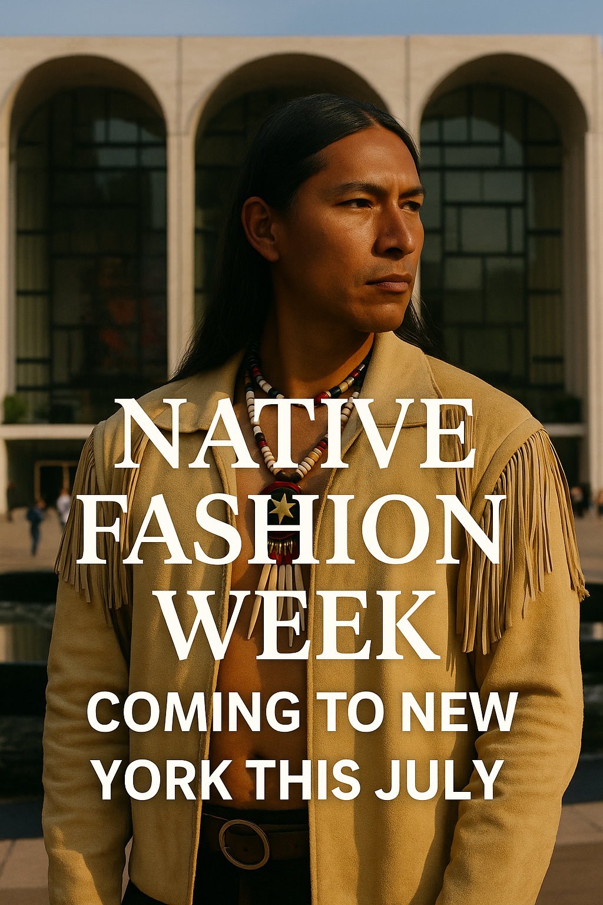

Native Fashion Week Returns to Santa Fe: 110 Nations, One Historic Runway
May 16, 2025 — Santa Fe, New Mexico
Under the deep turquoise skies of the Southwest, something truly historic unfolded this week: the return of Native Fashion Week, a celebration of Indigenous design, identity, and storytelling that brought together over 50 designers representing 110 tribal nations.
Organized by the Southwestern Association for Indian Arts (SWAIA), this second annual edition of Native Fashion Week has become one of the most important fashion events on the North American continent — not for its celebrity front rows or luxury price tags, but for its uncompromising commitment to heritage, artistry, and sovereignty.
“We are not trends. We are traditions evolving,” said designer Korina Emmerich (Puyallup), whose opening collection set the tone for a week grounded in power and precision.
Collections ranged from traditional woven garments to avant-garde pieces blending beadwork, leatherwork, and digital textiles. The runway, lined with red clay and cedar boughs, was as much a spiritual space as a fashion stage.
“We walk in beauty and in resistance,” said Sky Eagle Collection’s designer Dante Biss-Grayson (Osage Nation). “This is not just about clothing. It’s about reclaiming space — in the fashion world, and in the world.”
Audience members included Indigenous youth groups, local elders, as well as curators from major art and fashion institutions. Instead of front-row influencers, it was about families, communities, and visibility.
Each show opened with acknowledgements of the land and closed with communal dances. Models included Two-Spirit individuals, elders, and next-generation designers showcasing their own wearable art. The message: fashion is culture, and culture is continuity.
SWAIA confirmed that Native Fashion Week will return in 2026 with plans to expand internationally, offering exchange programs with Indigenous designers from South America, Australia, and New Zealand.
Published: 2025-05-16